Manual de usuario
Keep Listening
Todo lo que se puede ver y hacer en la página: escuchar, guardar, publicar, comprar y administrar.
| Integrantes | Sophia Benitez · Alí Pérez |
|---|---|
| Empresa | TecnoPlus |
| Materia | Taller de Construcción de Software · 6.º año |
| Entrega | 6 de noviembre de 2026 |
Cómo leer este manual
Cada pantalla tiene su captura con las funciones numeradas (círculo verde y recuadro). Debajo de la imagen está la lista con el número de cada función y lo que hace. En total se describen 227 funciones en 37 capturas.
Cuentas de prueba: sophia / Usuario1234 (usuario) y admin (administrador).
Contenido
- La pantalla y cómo moverse
- Crear una cuenta e iniciar sesión
- Inicio
- Explorar
- "Ahora suena" y la letra
- Mi música
- Publicar tu música
- La tienda
- Tu perfil
- Panel de administración
- Página de error
- Atajos de teclado
- Preguntas rápidas
1. La pantalla y cómo moverse
Todas las pantallas comparten el menú de la izquierda, la barra de arriba, el panel "Ahora" a la derecha y el reproductor abajo. Al cambiar de sección la página no se recarga y la música sigue sonando. Estas partes se numeran una sola vez acá; en el resto del manual se numera solo lo propio de cada pantalla.
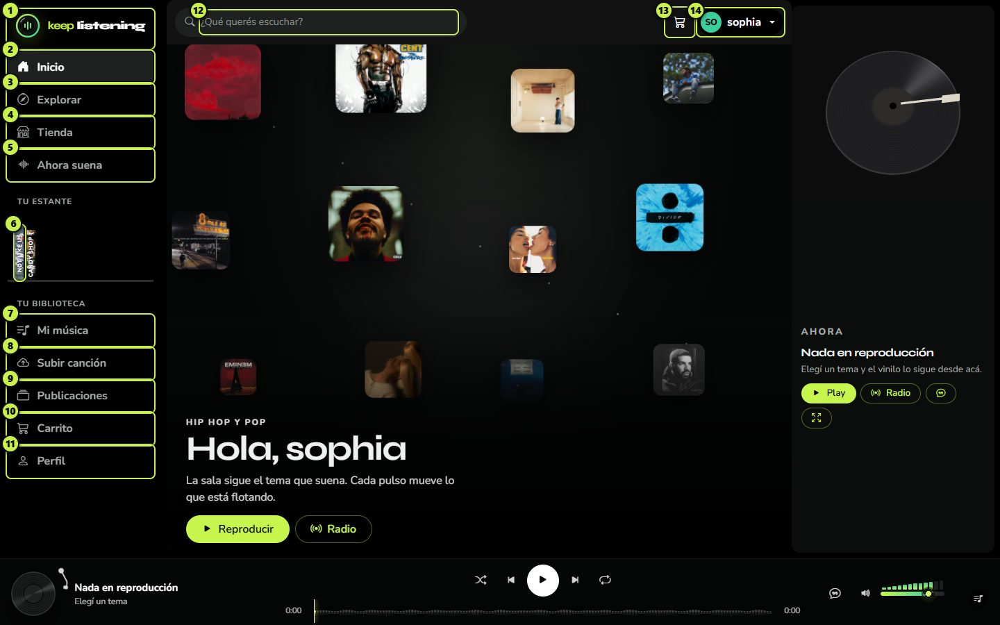
- 1Logo: vuelve al inicio.
- 2Inicio: la sala con temas al azar y las secciones de la portada.
- 3Explorar: el dial de radio, la búsqueda y las listas por género.
- 4Tienda: la disquería para comprar discos.
- 5Ahora suena: abre la pantalla completa del tema que suena.
- 6Tu estante: tus últimos me gusta como lomos de discos; tocá uno para escucharlo.
- 7Mi música: la batea, tus discos comprados y lo guardado.
- 8Subir canción: publicar un tema propio.
- 9Publicaciones: el estado de lo que subiste y tus álbumes.
- 10Carrito: los discos que vas a comprar (con su cantidad).
- 11Perfil: tus datos, foto y contraseña.
- 12Buscador: resultados mientras escribís (temas, discos y artistas).
- 13Ícono del carrito con la cantidad de productos.
- 14Tu cuenta: menú con Mi música, Publicaciones, Compras, Perfil y Cerrar sesión.
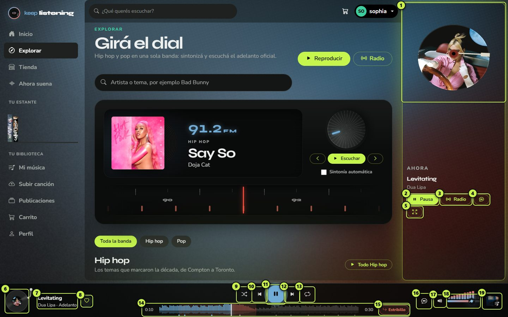
- 1Panel Ahora: el tocadiscos con el tema que suena; tocalo para abrir Ahora suena.
- 2Play / Pausa desde el panel.
- 3Radio: pone temas al azar.
- 4Abre la letra del tema.
- 5Abre Ahora suena en pantalla completa.
- 6Vinilo: tocalo para abrir Ahora suena; giralo con el mouse para hacer scratch.
- 7Tema y artista que suenan (Adelanto = fragmento de 30 s).
- 8Corazón: guarda el tema en Mi música y en tu estante.
- 9Aleatorio: el próximo tema se elige al azar.
- 10Anterior (o vuelve al principio del tema).
- 11Play / Pausa (también con la barra espaciadora).
- 12Siguiente tema.
- 13Repetir: vuelve a empezar el tema al terminar.
- 14Onda del tema: tocá o arrastrá para adelantar; las zonas marcadas son estribillos.
- 15Estribillo: salta directo al próximo estribillo.
- 16Letra: abre la letra sincronizada.
- 17Parlante: silencia o vuelve a activar el sonido (tecla M).
- 18Volumen: arrastrá la barra, usá la rueda o las flechas; arriba se ve el %.
- 19Cola: muestra lo que sigue; tocala para ver la lista completa.
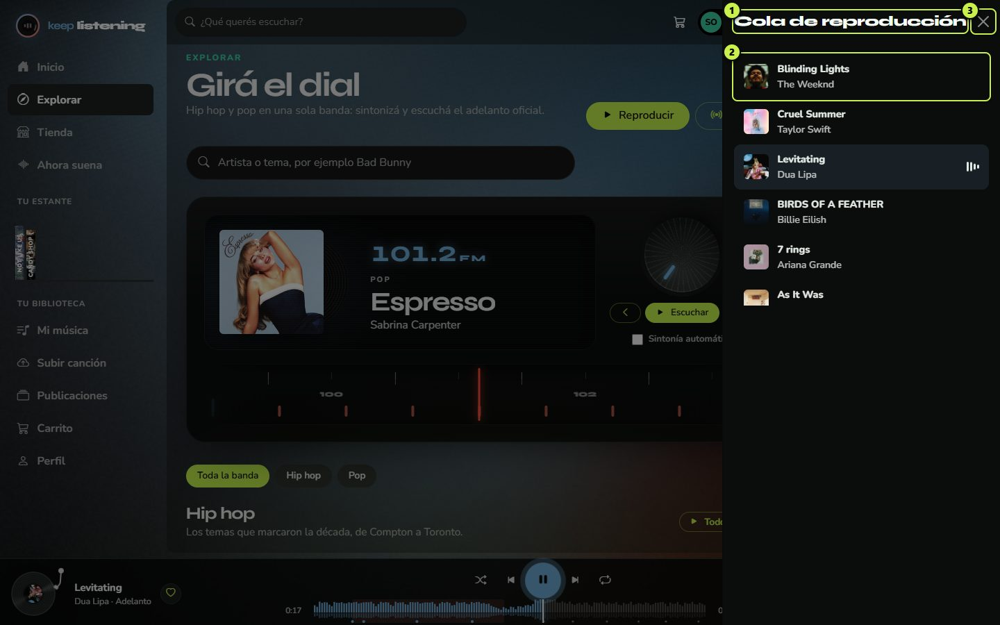
- 1Cola de reproducción: todos los temas que van a sonar.
- 2Cada tema: el que suena tiene el ecualizador; tocá otro para saltar a él.
- 3Cierra la cola.
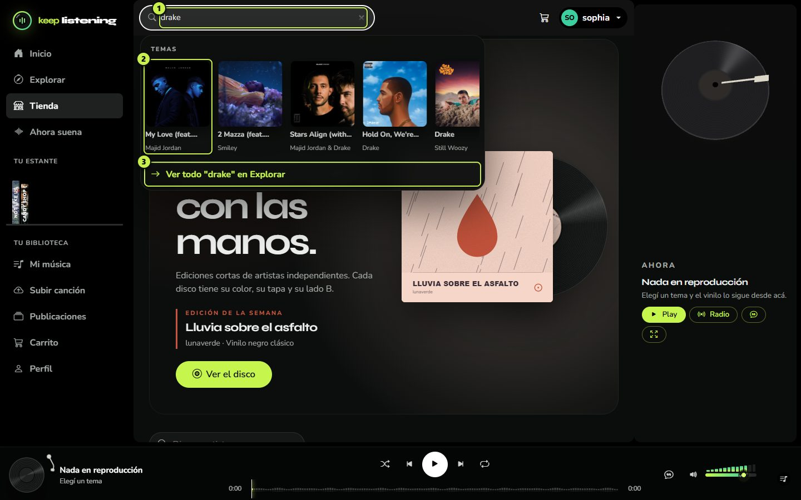
- 1Escribí al menos 2 letras.
- 2Temas: tocá una tapa para escucharla.
- 3Ver todo en Explorar.
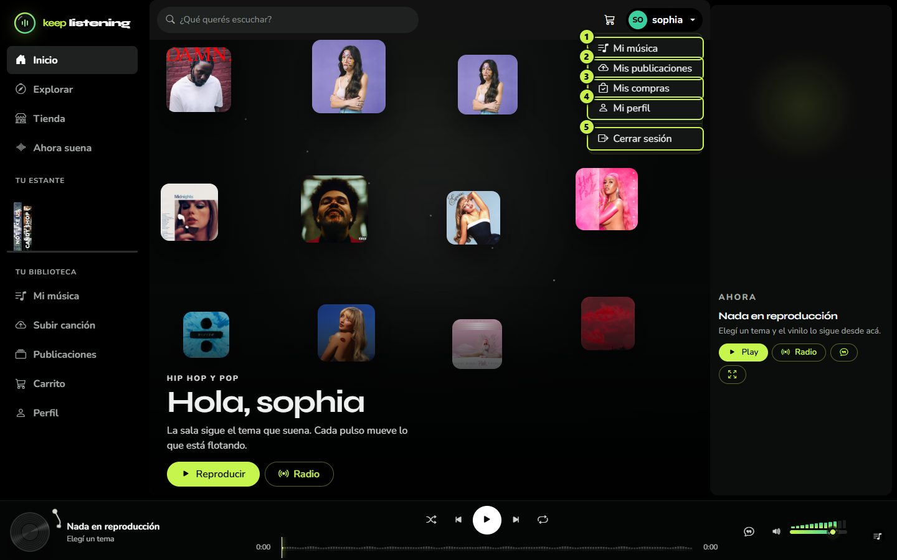
- 1Mi música.
- 2Mis publicaciones.
- 3Mis compras: los pedidos y su estado.
- 4Mi perfil.
- 5Cerrar sesión.
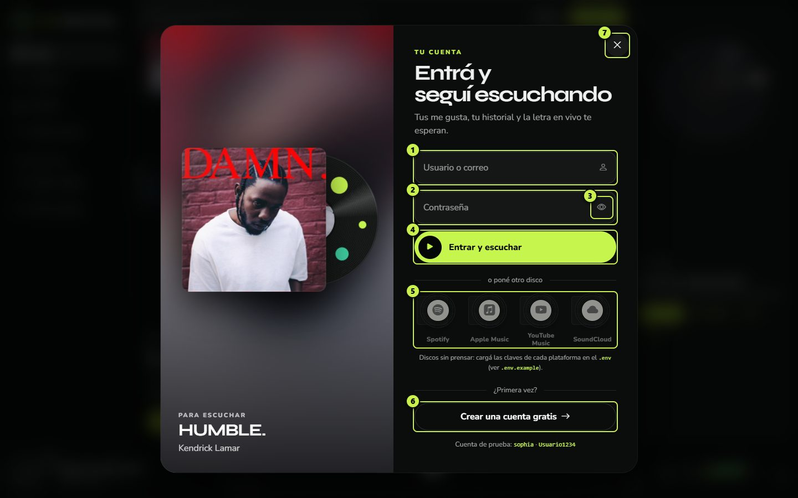
- 1Usuario o correo.
- 2Contraseña.
- 3Muestra u oculta la contraseña.
- 4Entrar y escuchar: el tema arranca solo, sin perder la página.
- 5Entrar con una plataforma de música (si está configurada).
- 6Crear una cuenta gratis.
- 7Cierra el panel (también con Esc).
En el celular
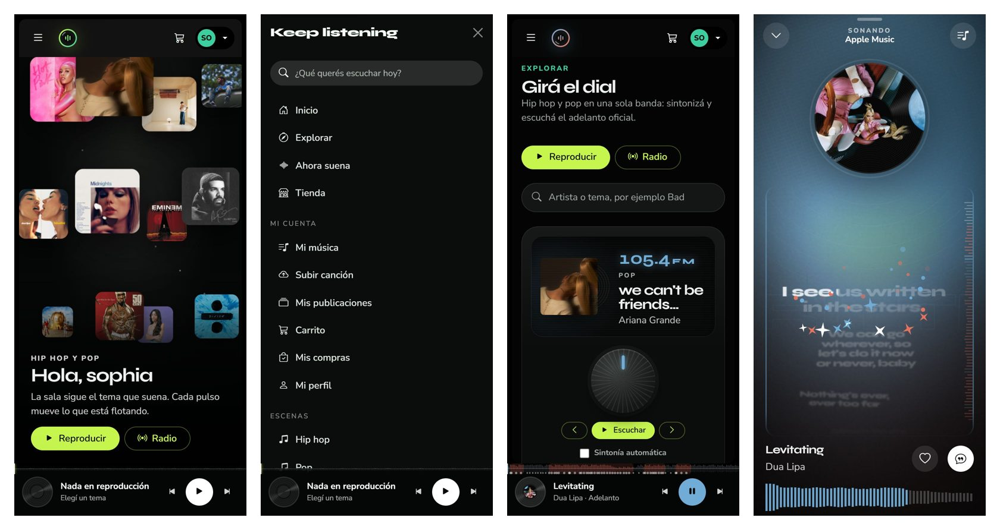
En el teléfono el menú de la izquierda y el panel "Ahora" se reemplazan por el botón ☰ (arriba a la izquierda), que trae su propio buscador, todas las secciones y las Escenas. El reproductor muestra tema, anterior, play y siguiente; tocando el vinilo o el título se abre "Ahora suena" con todos los controles.
2. Crear una cuenta e iniciar sesión
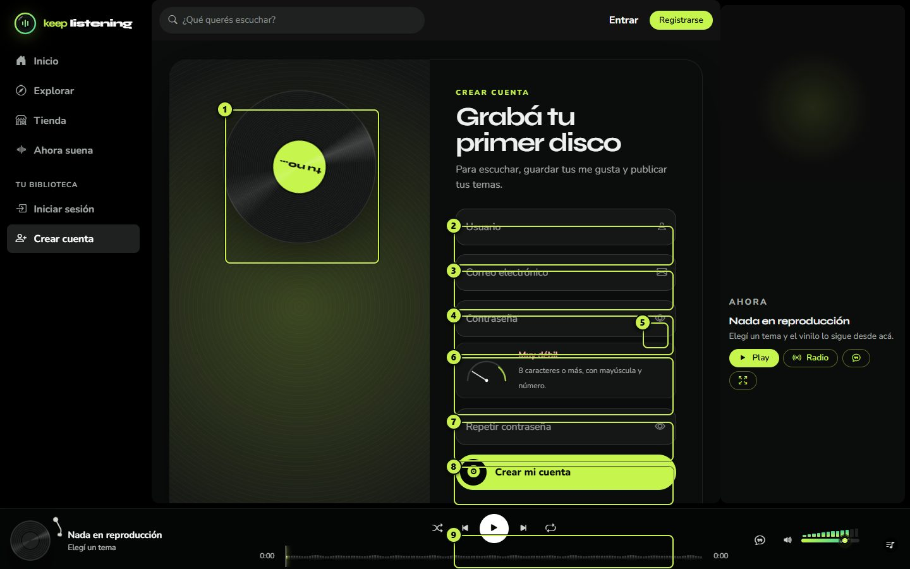
- 1Vinilo: tu usuario aparece en la etiqueta; la edición mejora con la seguridad de la clave.
- 2Nombre de usuario (hasta 30 caracteres, único).
- 3Correo electrónico (único).
- 4Contraseña: 8 o más caracteres, con mayúscula y número.
- 5Muestra u oculta la contraseña.
- 6Medidor de seguridad de la contraseña.
- 7Repetí la contraseña.
- 8Crear mi cuenta: crea la cuenta y entra.
- 9Registrarse con una plataforma de música (si está configurada).
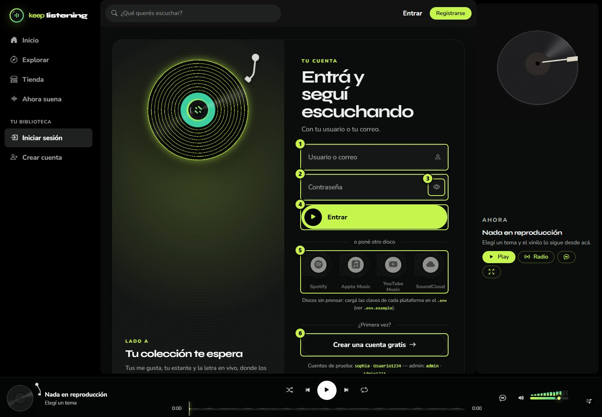
- 1Usuario o correo.
- 2Contraseña (5 intentos fallidos frenan el ingreso unos 15 minutos).
- 3Muestra u oculta la contraseña.
- 4Entrar.
- 5Entrar con Spotify, Apple Music, YouTube Music o SoundCloud.
- 6Ir a crear una cuenta.
Si un administrador bloqueó la cuenta, al entrar se ve el motivo.
3. Inicio
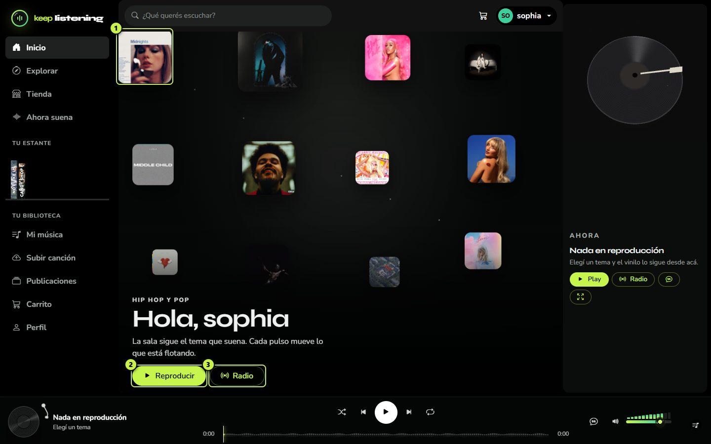
- 1Portadas flotantes: 12 temas al azar; tocá una para escucharla.
- 2Reproducir: pone los 12 temas en orden.
- 3Radio: mezcla los temas al azar.
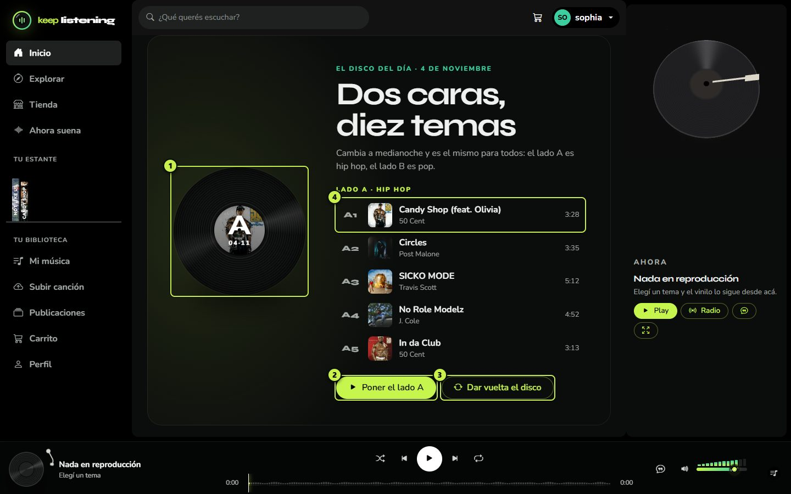
- 1Disco del día: igual para todos, cambia a medianoche.
- 2Poner el lado que se ve.
- 3Dar vuelta el disco (lado A hip hop, lado B pop).
- 4Tocá un tema para escucharlo con ese lado como lista.
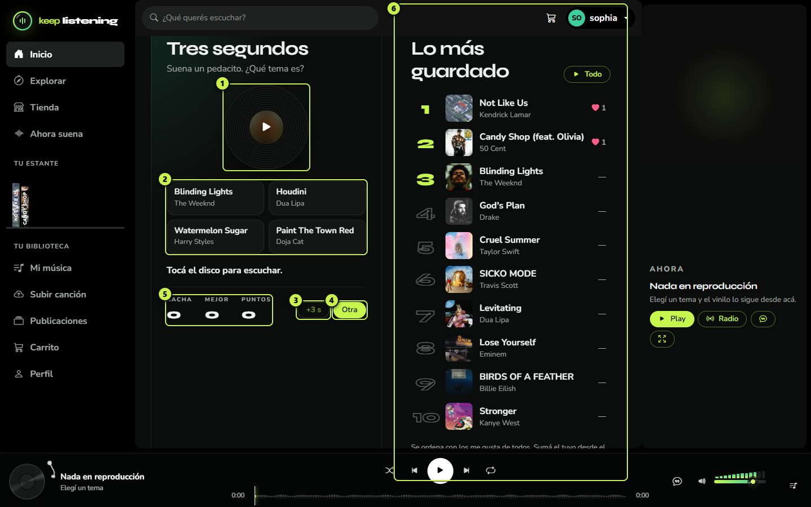
- 1Tocá el disco: suenan 3 segundos de un tema.
- 2Elegí cuál es entre 4 opciones (3 puntos con 3 s, 1 punto con 6 s).
- 3+3 s: escuchá 6 segundos.
- 4Otra: arma una ronda nueva.
- 5Racha, mejor marca y puntos.
- 6Lo más guardado: los 10 temas con más me gusta de la comunidad.
Más abajo también están En la batea (un disco por artista), Recién prensados (los últimos discos de la tienda) y Hecho en la sala (los últimos temas que subieron los usuarios). Para jugar a "Tres segundos" hace falta iniciar sesión.
4. Explorar
Funciona como una radio FM: cada tema es una estación.
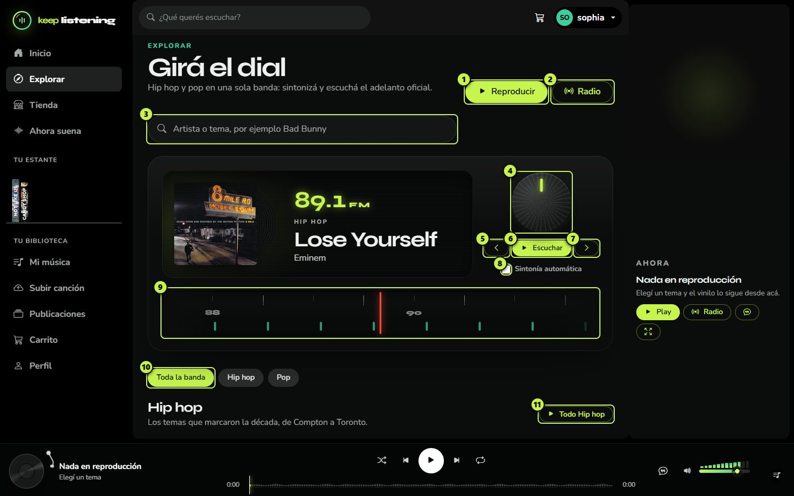
- 1Reproducir toda la lista en orden.
- 2Radio: toda la lista mezclada.
- 3Buscar un artista o tema (Enter).
- 4Perilla: girala para cambiar de estación.
- 5Estación anterior.
- 6Escuchar la estación.
- 7Estación siguiente.
- 8Sintonía automática: suena sola cuando dejás quieto el dial.
- 9Banda del dial: arrastrala o usá la rueda; entre estaciones hay estática.
- 10Filtros: toda la banda, Hip hop o Pop.
- 11Escuchar entera la sección.
5. "Ahora suena" y la letra
Es la pantalla completa del tema que suena. Se abre desde el menú, el panel Ahora, el vinilo o el título del reproductor, o con la tecla E.
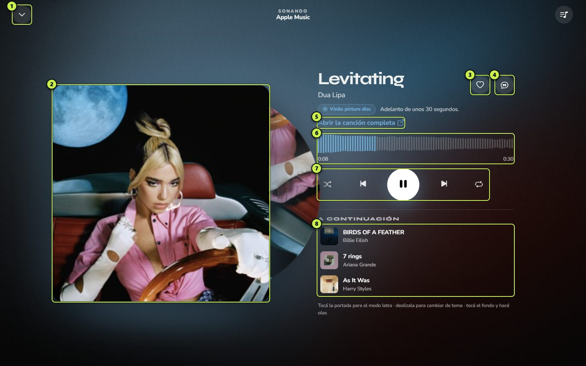
- 1Cierra la pantalla (también Esc, la tecla E o arrastrar hacia abajo).
- 2Portada: deslizala para pasar de tema; tocala para ver la letra.
- 3Corazón: guarda el tema.
- 4Letra (tecla L).
- 5Abrir la canción completa en Apple Music.
- 6Progreso con espectro: arrastrá para adelantar.
- 7Controles: aleatorio, anterior, play, siguiente, repetir.
- 8A continuación: los próximos 3 temas; tocá uno para escucharlo.
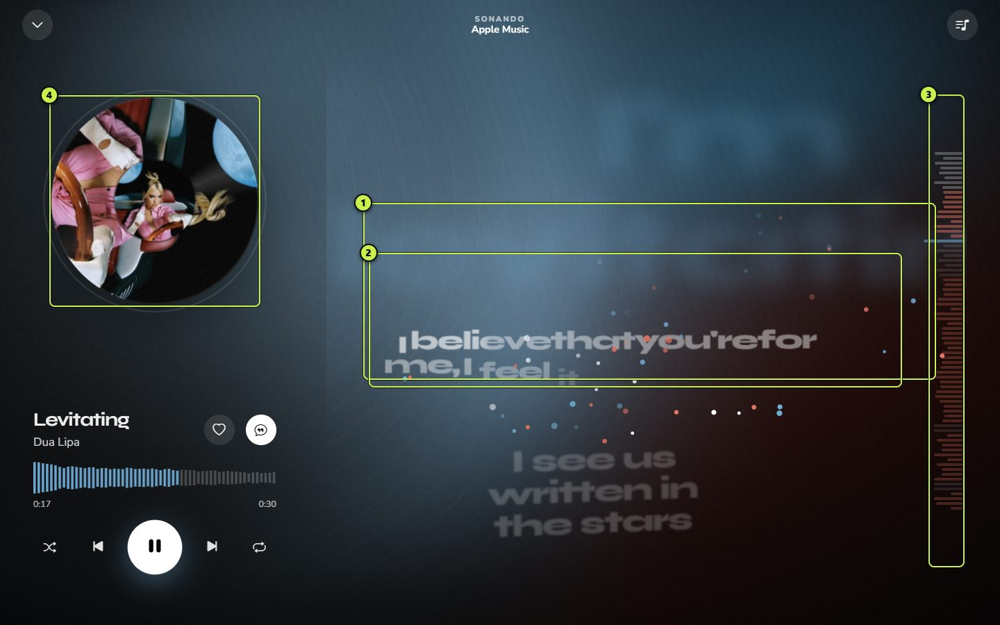
- 1La línea que se canta: se pinta palabra por palabra. Tocá cualquier verso para ir a ese momento (o usá ↑ / ↓).
- 2Mapa de la letra: una marca por verso; los estribillos resaltados.
- 3El disco gira y se llena con cada verso.
Si un tema no tiene letra sincronizada, se muestra entera como una hoja en columnas. Algunas palabras (fuego, amor, estrellas, lluvia, dinero) se iluminan con partículas.
6. Mi música
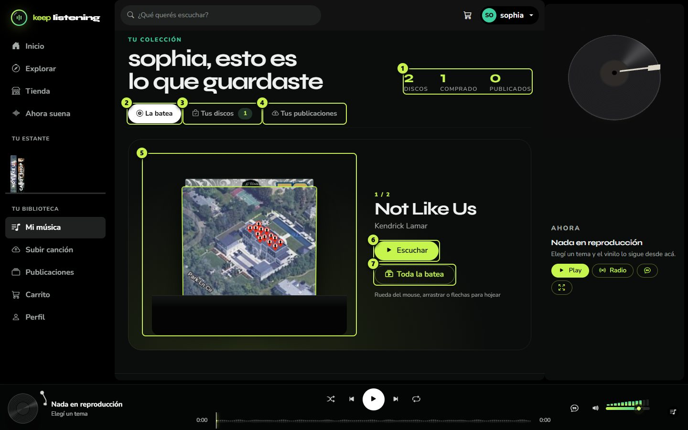
- 1Resumen: discos, comprados y publicados.
- 2Pestaña La batea: tus me gusta.
- 3Pestaña Tus discos: lo que compraste, para escuchar.
- 4Pestaña Tus publicaciones.
- 5La batea: pasá los discos con la rueda, arrastrando o con las flechas.
- 6Escuchar el disco de adelante.
- 7Toda la batea seguida.
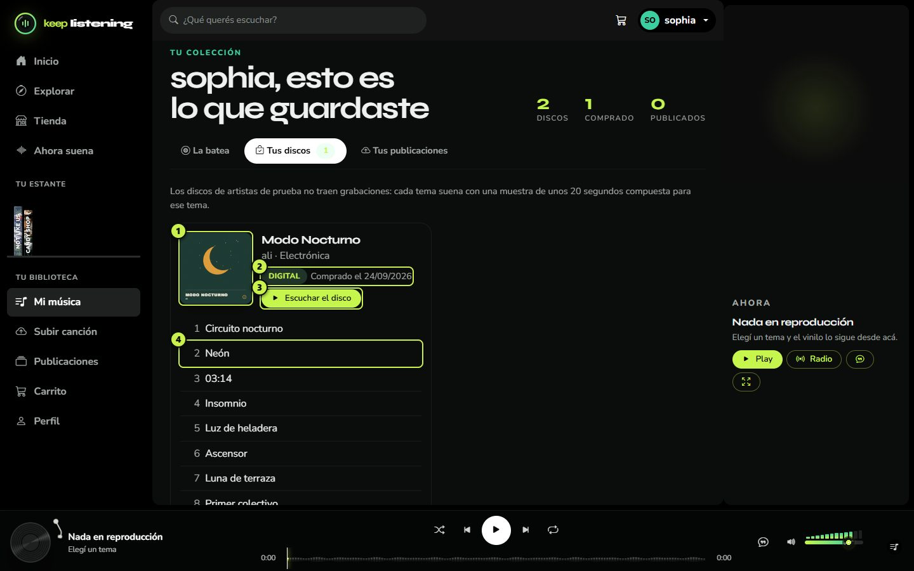
- 1Tapa: abre la ficha del disco en la tienda.
- 2Formato comprado (digital o vinilo) y fecha de compra.
- 3Escuchar el disco entero.
- 4Tocá un tema para escucharlo (los de prueba suenan con una muestra).
Los discos de la tienda de artistas de prueba no traen grabaciones: cada tema suena con una muestra de unos 20 segundos compuesta para ese tema. Los discos de artistas de la comunidad suenan con sus canciones publicadas.
7. Publicar tu música
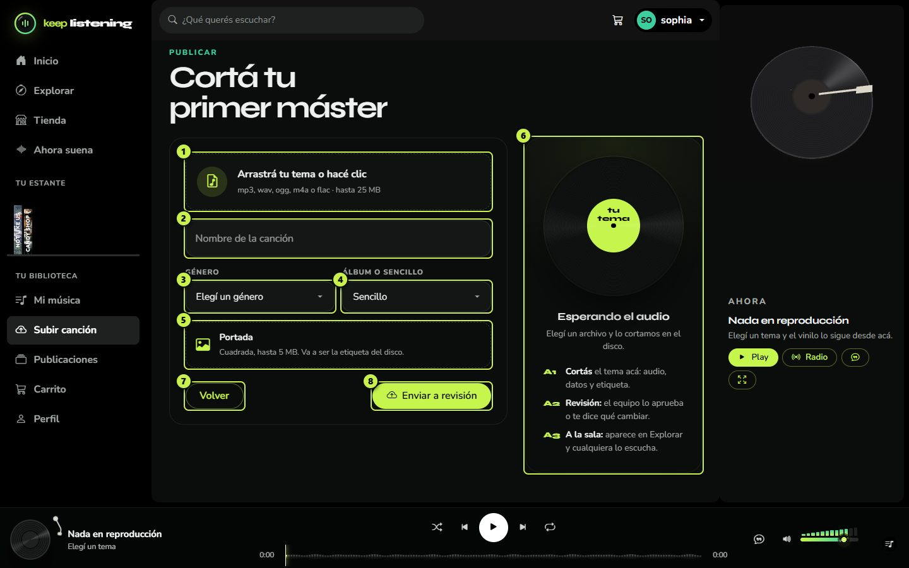
- 1Audio: arrastralo o tocá para elegirlo (mp3, wav, ogg, m4a o flac, hasta 25 MB).
- 2Nombre de la canción (aparece en la etiqueta del disco).
- 3Género.
- 4Sencillo o parte de un álbum (pide álbum y número de pista).
- 5Portada: cuadrada, hasta 5 MB.
- 6Torno: muestra la onda real del audio y permite escucharlo antes de subir.
- 7Volver sin publicar.
- 8Enviar a revisión: un administrador la aprueba o la devuelve.
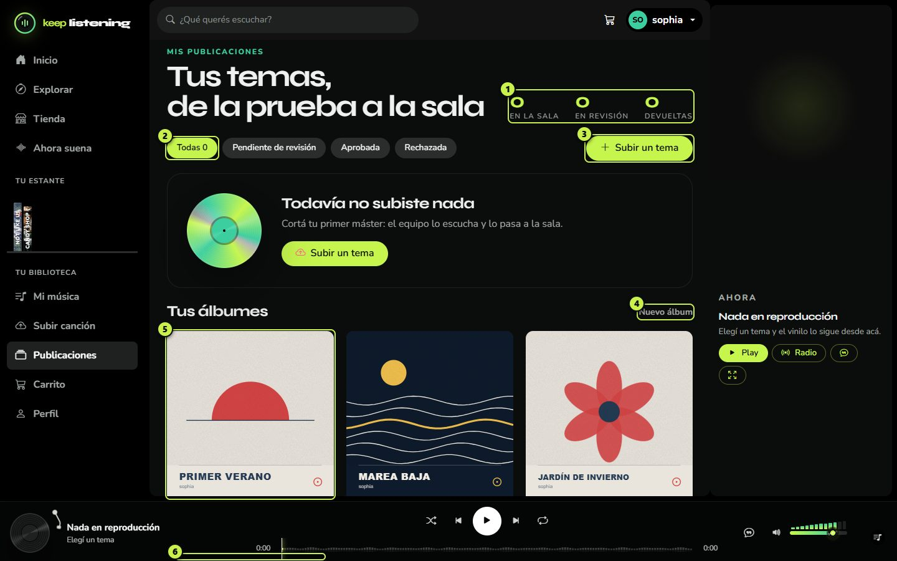
- 1Cuántos temas están en la sala, en revisión y devueltos.
- 2Filtros por estado: todas, en revisión, aprobadas, rechazadas.
- 3Subir un tema.
- 4Nuevo álbum.
- 5Tus álbumes: tapa y título.
- 6Editar el álbum.
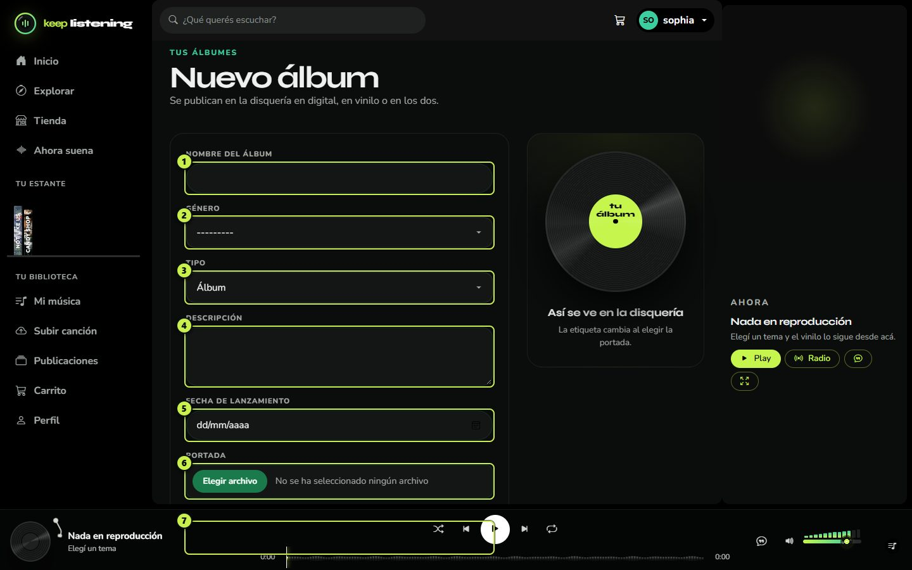
- 1Título del álbum.
- 2Género.
- 3Álbum o sencillo.
- 4Descripción.
- 5Fecha de lanzamiento.
- 6Portada (se ve en el disco).
- 7Formato físico: CD, vinilo o cassette.
Cada canción pasa por Subida → En revisión → En la sala (aprobada, ya la escucha todo el mundo) o Devuelta, con el motivo para corregirla. Al editarla vuelve a revisión. Los álbumes quedan ocultos en la tienda hasta que un administrador los publica.
8. La tienda
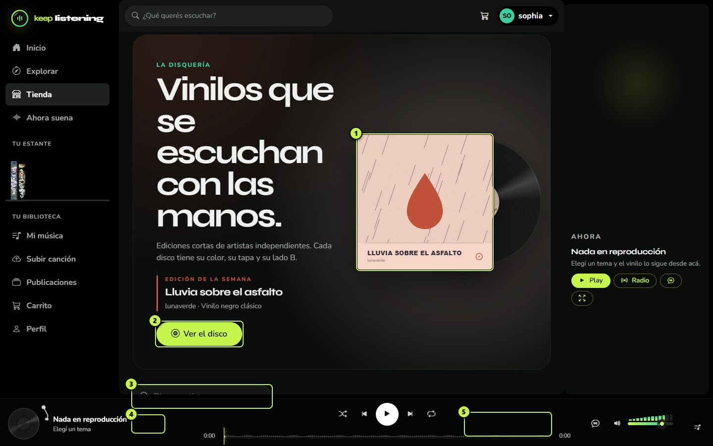
- 1Disco destacado: abre su ficha.
- 2Ver el disco destacado.
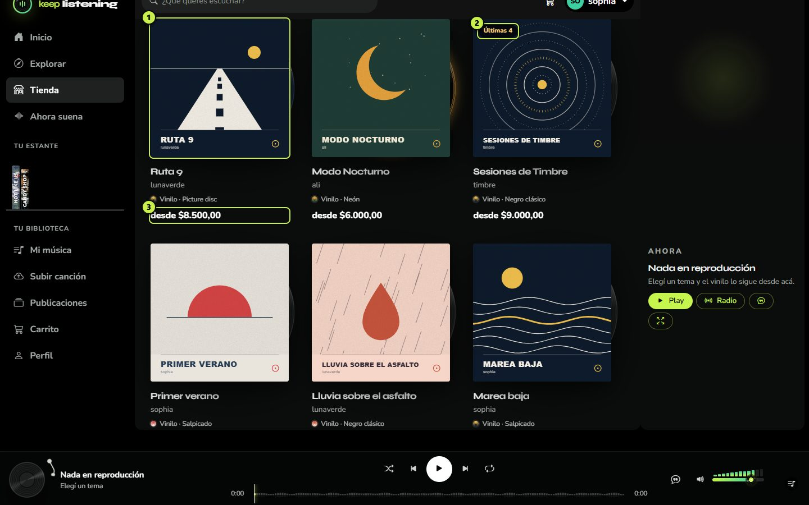
- 1Buscar por disco o artista.
- 2Filtrar por género.
- 3Ordenar: recientes, menor o mayor precio, A-Z.
- 4Tarjeta del disco: al pasar el mouse el vinilo sale de la funda; tocala para ver la ficha.
- 5Aviso de stock: últimas unidades o agotado.
- 6Precio desde (el formato más barato).
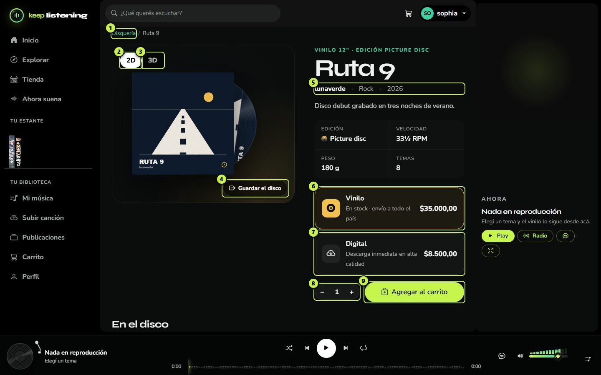
- 1Volver a la disquería.
- 2Vista 2D.
- 3Vista 3D: arrastrá el disco para girarlo.
- 4Guardar / sacar el disco de la funda.
- 5Artista: abre su página.
- 6Vinilo: formato físico, con envío (avisa el stock).
- 7Digital: descarga.
- 8Cantidad (1 a 20).
- 9Agregar al carrito.
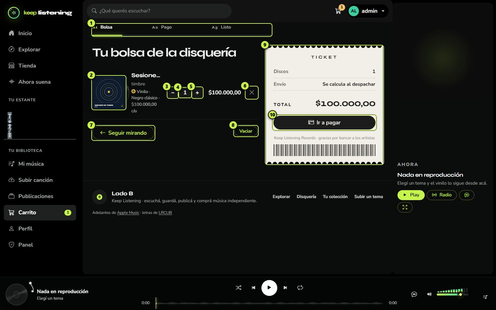
- 1Pasos de la compra: bolsa, pago y listo.
- 2Disco en el carrito: abre su ficha.
- 3Restar uno (en 1, quita el disco).
- 4Cantidad.
- 5Sumar uno.
- 6Quitar el disco.
- 7Seguir mirando la tienda.
- 8Vaciar el carrito (pide confirmación).
- 9Ticket con el total.
- 10Ir a pagar.
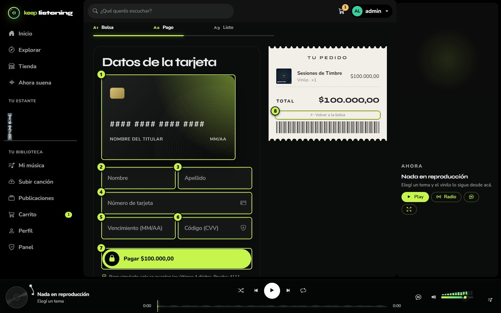
- 1Tarjeta dibujada: se completa mientras escribís y muestra la marca.
- 2Nombre del titular.
- 3Apellido del titular.
- 4Número de tarjeta (prueba: 4111 1111 1111 1111).
- 5Vencimiento MM/AA (prueba: 12/30).
- 6Código de seguridad (prueba: 123).
- 7Pagar: es una simulación, no se cobra nada.
- 8Volver a la bolsa.
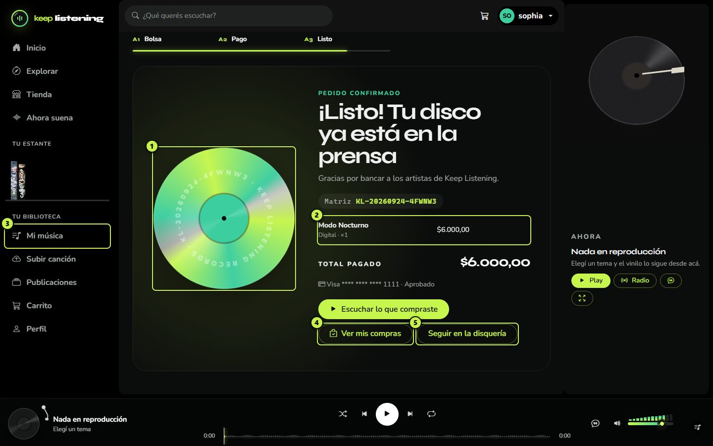
- 1Número de pedido grabado en el disco.
- 2Discos comprados, total y tarjeta (solo los últimos 4 números).
- 3Escuchar lo que compraste (Mi música, Tus discos).
- 4Ver mis compras.
- 5Seguir en la disquería.
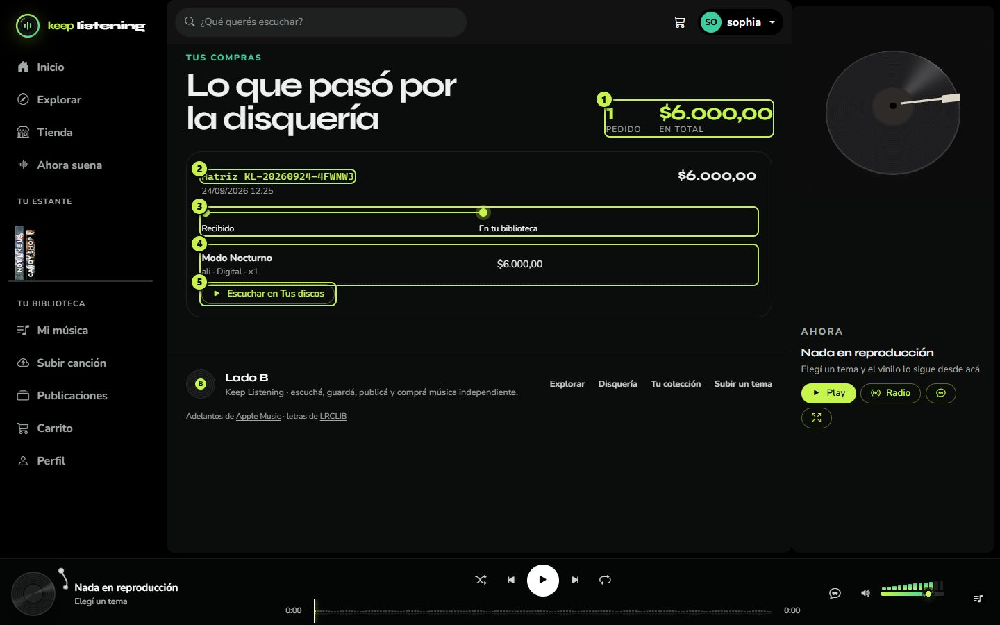
- 1Cantidad de pedidos y total gastado.
- 2Número y fecha del pedido.
- 3Estado: los vinilos van de Recibido a Entregado; los digitales a En tu biblioteca.
- 4Discos del pedido, formato, cantidad y precio.
- 5Escuchar en Tus discos.
El pago es una simulación: no se cobra nada y no hace falta una tarjeta real. El número tiene que tener formato válido; uno inventado da "número de tarjeta no válido". Tarjeta de prueba: 4111 1111 1111 1111, vencimiento 12/30, código 123 (también sirven 5555 5555 5555 4444 y 3782 822463 10005). Solo se guardan los últimos 4 números.
Lo comprado se escucha en Mi música → Tus discos.
9. Tu perfil
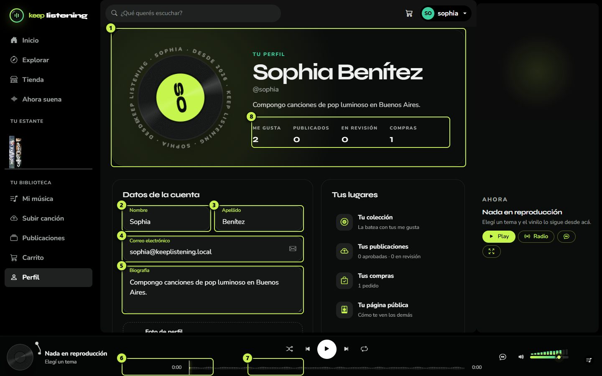
- 1Tu etiqueta: foto o iniciales y tus cifras.
- 2Nombre.
- 3Apellido.
- 4Correo (único).
- 5Biografía (se ve en tu página pública).
- 6Cambiar contraseña.
- 7Guardar los cambios.
- 8Tus lugares: colección, publicaciones, compras y página pública.
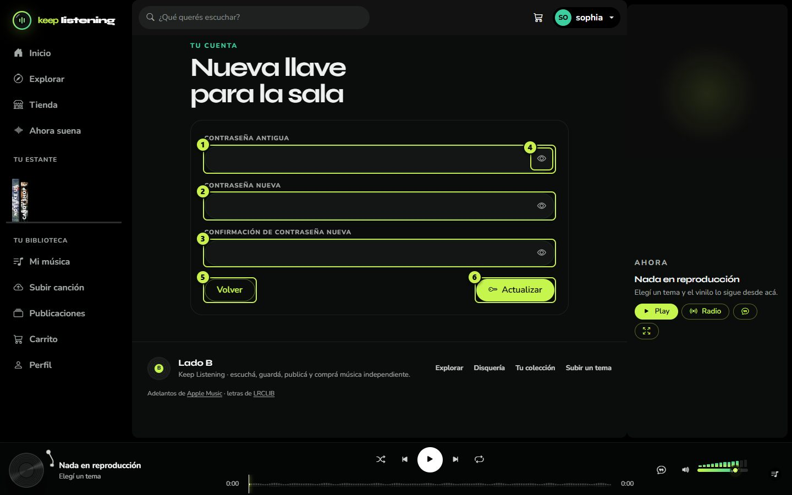
- 1Contraseña actual.
- 2Contraseña nueva.
- 3Repetí la nueva.
- 4Muestra u oculta cada contraseña.
- 5Volver sin cambiar.
- 6Actualizar (la sesión sigue abierta).
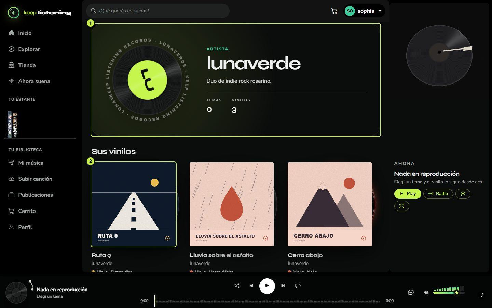
- 1Página pública del artista: nombre, biografía y cifras.
- 2Sus discos en la tienda.
10. Panel de administración
Solo para administradores: aparece como Panel en el menú.
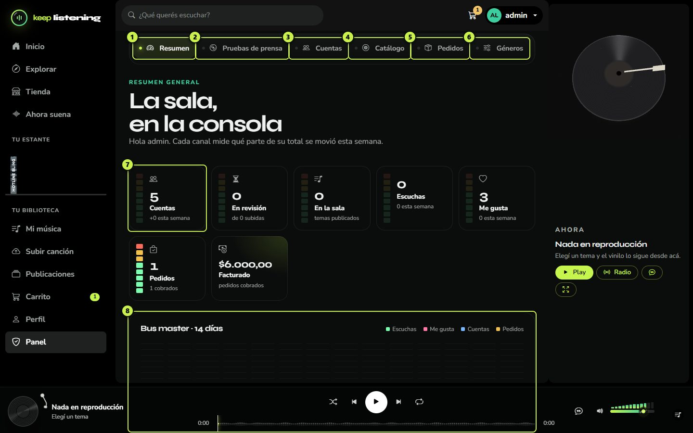
- 1Resumen.
- 2Pruebas de prensa: revisar lo que suben los usuarios.
- 3Cuentas.
- 4Catálogo de la tienda.
- 5Pedidos.
- 6Géneros.
- 7Medidores: cuentas, en revisión, en la sala, escuchas, me gusta, pedidos y facturado.
- 8Bus master: actividad de los últimos 14 días (pasá el mouse por un día).
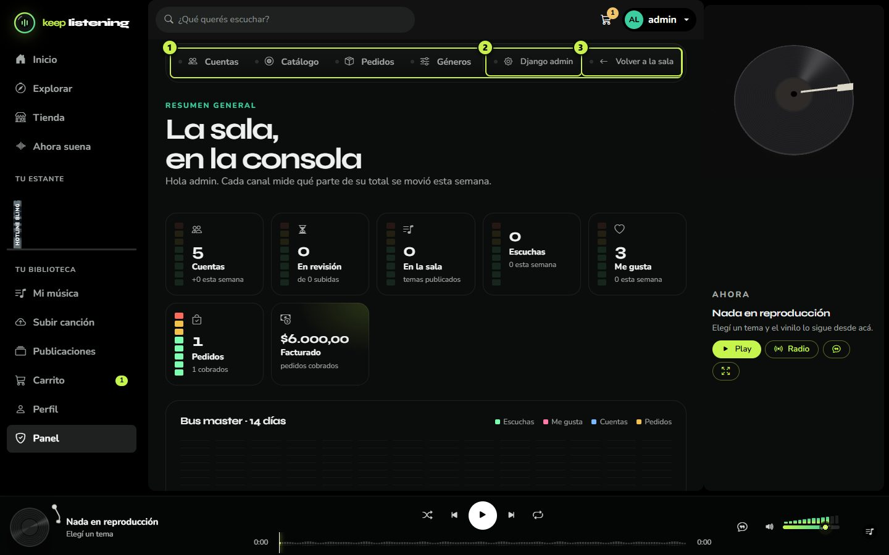
- 1Las pestañas del panel se deslizan hacia los costados cuando no entran.
- 2Django admin (administración avanzada).
- 3Volver a la sala.
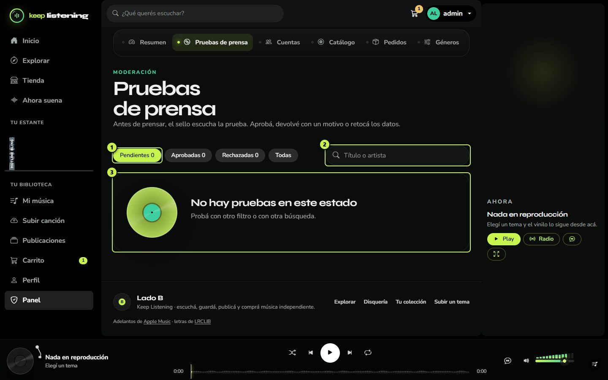
- 1Filtros: pendientes, aprobadas, rechazadas o todas.
- 2Buscar por título o artista.
- 3Cada prueba: escuchar, Aprobar, Rechazar con motivo o Eliminar.
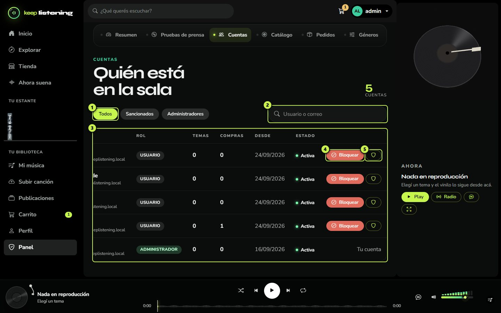
- 1Filtros: todos, sancionados o administradores.
- 2Buscar por usuario o correo.
- 3La tabla se desliza hacia los costados para ver todas las columnas.
- 4Bloquear o desbloquear (pide confirmación).
- 5Cambiar el rol (solo un superusuario).
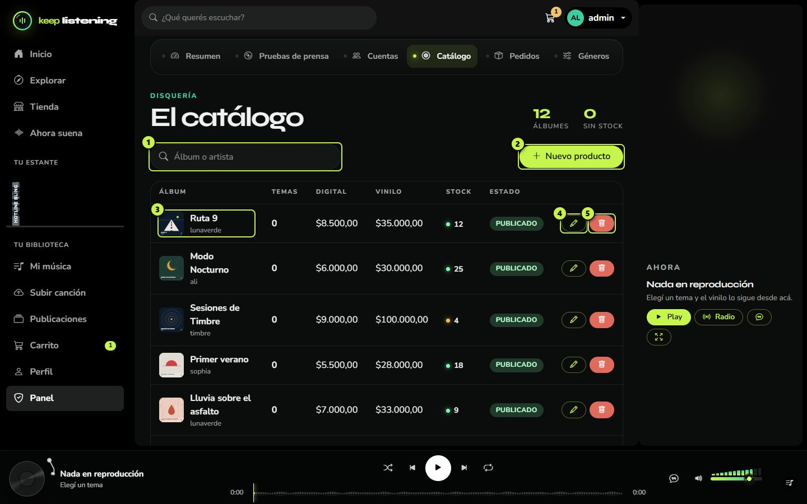
- 1Buscar disco o artista.
- 2Nuevo producto.
- 3Disco y artista.
- 4Editar precios, stock, formatos y visibilidad.
- 5Eliminar (pide confirmación).
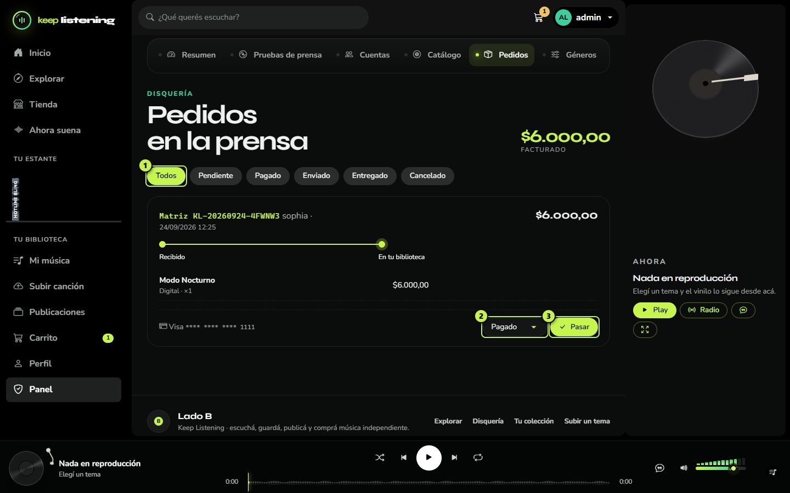
- 1Filtrar por estado.
- 2Nuevo estado: pagado, enviado, entregado o cancelado.
- 3Pasar: aplica el estado (cancelar devuelve el stock).
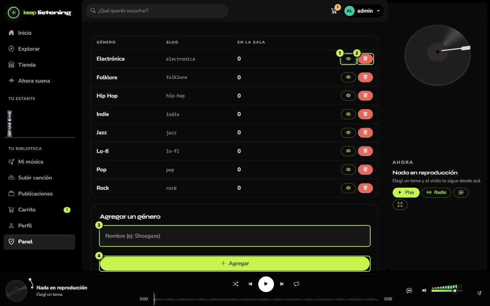
- 1Ver el género en Explorar.
- 2Eliminar el género (pide confirmación).
- 3Nombre del género nuevo.
- 4Agregar el género.
Al rechazar una canción se escribe un motivo (obligatorio), que el artista ve. En el detalle de cada prueba se la escucha en el plato y se puede retocar los datos sin mandarla de nuevo a revisión. Un pedido cancelado devuelve el stock y no se puede reabrir.
11. Página de error
Aparece cuando la dirección no existe (si falla el servidor, se ve "Se cortó la luz" con un botón para volver al inicio).
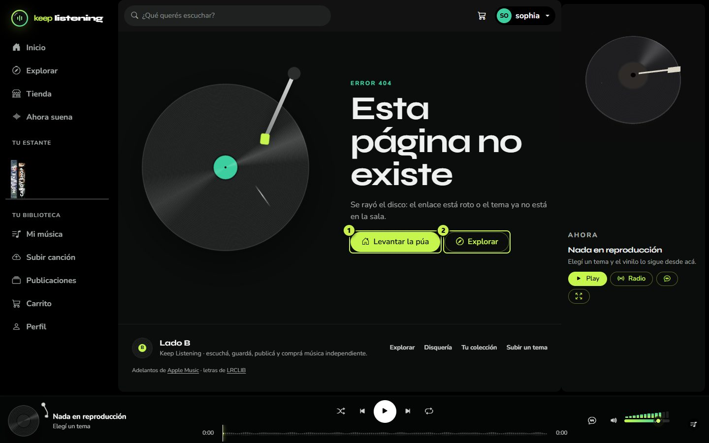
- 1Levantar la púa: vuelve al inicio.
- 2Explorar: buscar música.
12. Atajos de teclado
| Tecla | Dónde | Qué hace |
|---|---|---|
| Espacio | Toda la página | Play / pausa |
| Shift + → / ← | Toda la página | Siguiente / anterior |
| M | Toda la página | Silenciar |
| E | Toda la página | Abrir o cerrar "Ahora suena" |
| → / ←, L, Esc | "Ahora suena" | Siguiente / anterior, letra, cerrar |
| ↑ / ↓ | Letra | Ir al verso anterior / siguiente |
| ↑ / ↓, Enter, Esc | Buscador | Recorrer, abrir, cerrar |
| Flechas, Enter | Dial, batea y volumen | Moverse y escuchar |
Los atajos generales no funcionan mientras escribís en un campo.
13. Preguntas rápidas
- No suena nada: revisá la conexión a internet (los temas vienen de Apple Music) y que el parlante no esté tachado.
- Me pide iniciar sesión al tocar un tema: escuchar requiere una cuenta.
- No encuentro mi canción en Explorar: todavía está en revisión; fijate en Publicaciones.
- "Número de tarjeta no válido": usá la tarjeta de prueba de la sección 8 (La tienda).
- La letra se ve como una hoja y no avanza: ese tema no tiene letra sincronizada con su adelanto.
- No puedo entrar: después de 5 intentos fallidos hay que esperar unos 15 minutos. Si un administrador bloqueó la cuenta, al entrar se ve el motivo.
- ¿Dónde escucho lo que compré? En Mi música → Tus discos.
- No veo mi álbum en la tienda: los álbumes de los artistas quedan ocultos hasta que un administrador los publica.
Keep Listening · TecnoPlus · Sophia Benitez y Alí Pérez · 2026